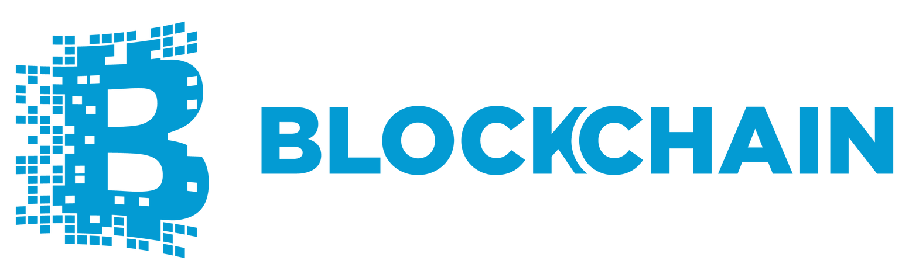
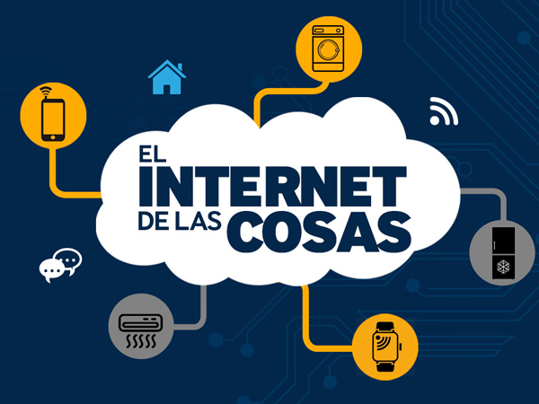
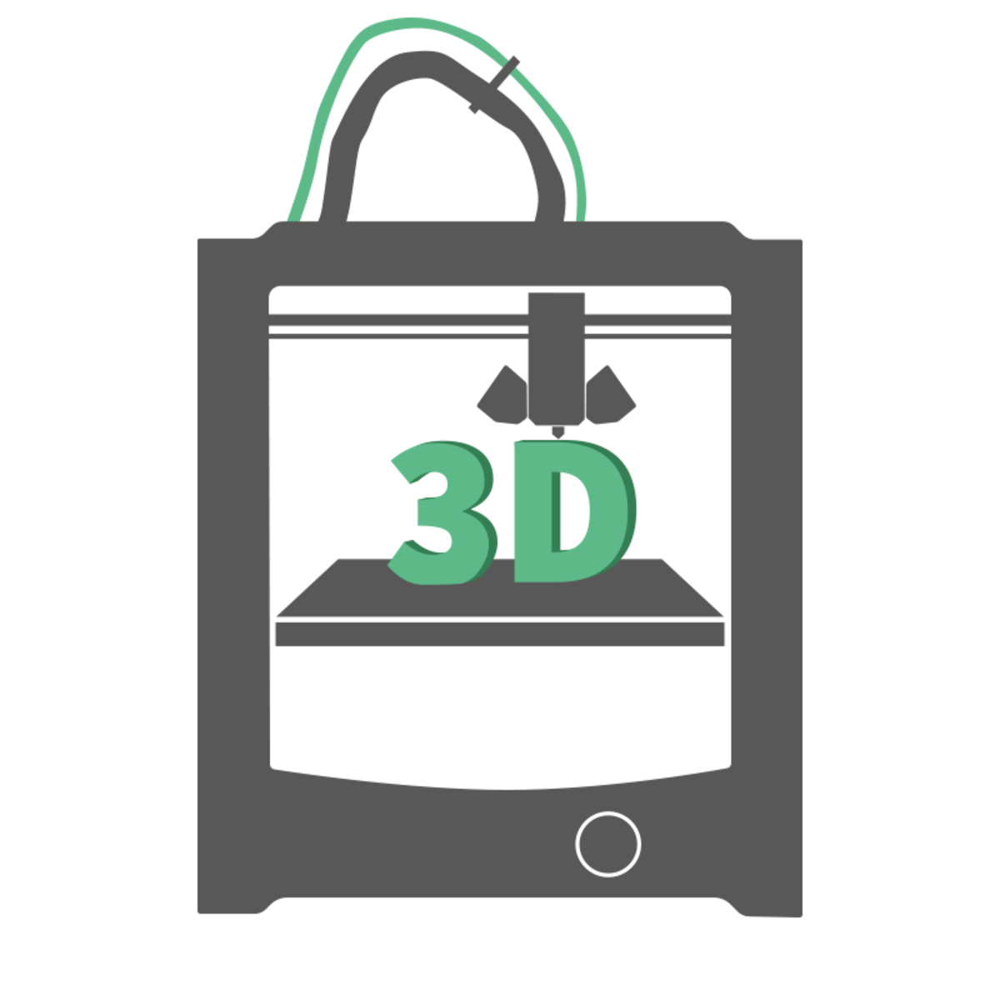

Html 5


HTML5 es un lenguaje marcado (de hecho, las siglas de HTML significan Hyper Text Markup Language) usado para
estructurar
y presentar el contenido para la web. Es uno de los aspectos fundamentales para el funcionamiento de los
sitios, pero
no es el primero. Es de hecho la quinta revisión del estándar que fue creado en 1990. A fines del año pasado,
la W3C la
recomendó para transformarse en el estándar a ser usado en el desarrollo de proyectos venideros.
Por así decirlo, qué es HTML5 está relacionado también con la entrada en decadencia del viejo estándar HTML 4,
que se combinaba con otros
lenguajes para producir los sitios que podemos ver hoy en día. Con HTML5, tenemos
otras posibilidades para explotar
usando menos recursos. Con HTML5, también entra en desuso el formato XHTML, dado que ya no sería
necesaria su
implementación.
HTML4 fue “declarado” el lenguaje
oficial de la web en el año 2000, y tomó una década para comenzar a implementar el
desarrollo de su nueva revisión. Esta nueva generación de HTML, se dice, pronto dominará el desarrollo en
internet,
pero introduce algunos cambios importantes que veremos dentro de algunas líneas.
Por ende, para los desarrolladores de sitios web es importante conocer las ventajas de HTML5, considerando que
algunas entidades se están moviendo en esta
dirección. No solamente Google con su navegador Chrome, hace unos años, sino
también Adobe hace unos meses, que removió
el soporte de Flash para Android para dar paso a la llegada de HTML5.
Relacionado:
Te pueden interesar estos videos:
CSS3


Mientras que HTML nos permite definir la
estructura una página web, las hojas de estilo en cascada (Cascading Style
Sheets o CSS) son las que nos ofrecen la posibilidad de definir las reglas y estilos de representación en
diferentes
dispositivos, ya sean pantallas de equipos de escritorio, portátiles, móviles, impresoras u otros dispositivos
capaces
de mostrar contenidos web.
Las hojas de estilo nos permiten definir de manera eficiente la representación de nuestras páginas y es uno de
los
conocimientos fundamentales que todo diseñador web debe manejar a la perfección para realizar su trabajo.
La primera versión de CSS fue publicada a fines del año 1996 y fue logrando popularidad y aceptación hasta
llegar a la
versión 2.1, estándar actual que ofrece gran
compatibilidad con la mayoría de los navegadores del mercado
A partir del año 2005 se comenzó a definir el sucesor de esta versión, al cual se lo conoce como CSS3 o
Cascading Style
Sheets Level 3. Actualmente en definición, esta versión nos ofrece una gran variedad de opciones muy importantes para
las necesidades del diseño web actual. Desde opciones de sombreado y redondeado, hasta funciones avanzadas de
movimiento y transformación, CSS3 es el estándar que dominará la web por los siguientes años.
Relacionado:
Te pueden interesar estos videos:
JavaScript


JavaScript es un lenguaje de
programación que puede utilizarse para añadir interactividad
a las páginas Web. A menudo se llama a JavaScript "lenguaje de escritura de guiones" (lenguaje de scripting)
denotando que es más fácil
escribir guiones que programar. En este caso, es una distinción sin diferencia.
Un guión Script
es un programa que está contenido internamente dentro de una página HTML (que es el método original de
escribir guiones) o reside en un archivo externo (el método preferido actualmente).En las páginas HTML, como
está incluido
en la etiqueta script <script> </script>, el texto del guión no aparece en la pantalla del usuario,
y el navegador
web es el que ejecuta el programa JavaScript.
La etiqueta <script> se encuentra muy a menudo dentro de la sección <head> de la página HTML, pero
también
puede incluir guiones, si lo desea, en la sección <body>.Con JavaScript, podrá hacer muchas cosas para
que
las páginas Web
sean más interactivas y proporcionen una experiencia más interesante a los visitantes de su sitio.
JavaScript permite crear una interfaz de usuario activa, lo que ofrece retroalimentación a los visitantes según
navegan
por sus páginas.Puede utilizar JavaScript para asegurarse de que los usuarios introducen
información válida en los formularios, lo que dará como resultado ahorro en tiempo.
Relacionado:
Te pueden interesar estos videos:
Progressive Web Apps

Son básicamente páginas web, pero mediante el uso de Service Workers y otras tecnologías se comportan
más como aplicaciones normales que como aplicaciones web.
Mediante los Service Workers y otras tecnologías las aplicaciones web progresivas pueden seguir
ejecutándose en segundo plano sin tener que vivir dentro del navegador. En el móvil es posible instalarlas
como una aplicación más y también en Windows mediante la mediación de Google Chrome y Mozilla Firefox.
En resumen, las aplicaciones web progresivas son una evolución natural de las aplicaciones web que difuminan
la barrera entre la web y las aplicaciones, pudiendo realizar tareas que generalmente solo las aplicaciones nativas
podían llevar a cabo.
Algunos ejemplos son las notificaciones, el funcionamiento sin conexión a Internet o la posibilidad de probar
una versión más ligera antes de bajarte una aplicación nativa de verdad.
Relacionado:
Te pueden interesar estos videos:
Inteligencia Artificial


La inteligencia artificial es la tecnología más avanzada en lo que al tratamiento del dato se refiere.
Los coches autónomos y robots inteligentes son, entre otros, los campos de investigación en los que la
inteligencia
artificial juega un papel fundamental. También en la analítica web (y omnicanal) ya son varias las empresas que
automatizan tareas de lanzamiento de campañas personalizadas a cada usuario apoyándose en el aprendizaje de las
computadoras.


Machine Learning
El amplio abanico
de algoritmos en Machine Learning se utiliza con la finalidad de proporcionar al humano los patrones
o las reglas subyacentes para entender los datos.Por ejemplo, un algoritmo que nos permita encontrar los
patrones
de navegación más comunes dentro del site. Esto podría servir para dirigir acciones de mejora de su usabilidad
más centralizadas en una sección u otra de la web.


Deep Learning
Se trata de una rama del Machine Learning centrada en las conocidas como Redes Neuronales. Éstas aprenden
a transformar
matemáticamente los datos de entrada al modelo a través de una serie de pasos o capas intermedias. El prefijo
“Deep”
en Deep Learning se refiere por tanto a la propia arquitectura de capas o “profundidad” de la red.La función de
estas capas,
o matemáticamente conocidas como hidden layers, es la de transformar y descomponer los datos para hallar los patrones
o reglas subyacentes. Se podría entender como el proceso de recomposición de un dibujo
despiezado en mil partes.


Red Neuronal
Una red neuronal es un modelo de computación cuya estructura de capas se asemeja a la estructura interconectada
de las
neuronas en el cerebro, con capas de nodos conectados. Una red neuronal puede aprender de los datos, de manera que se puede
entrenar para que reconozca patrones, clasifique datos y pronostique eventos futuros.Las redes
neuronales descomponen
las entradas en capas de abstracción. Se pueden entrenar con muchos ejemplos para que reconozcan patrones de
voz o en imágenes,
por ejemplo, igual que el cerebro humano. Su comportamiento está definido por la forma en que se conectan sus
elementos
individuales, así como por la importancia (o ponderación) de dichas conexiones. Estas ponderaciones se ajustan
automáticamente
durante el entrenamiento de acuerdo con una regla de aprendizaje especificada hasta que la red neuronal
lleva a cabo la tarea deseada correctamente.
Relacionado:
Te pueden interesar estos videos:
Criptomonedas

Las criptomonedas son un tipo de moneda digital que hace uso de un cifrado
digital en sus operaciones,
como lo pueden ser transferencias de dinero o el pago de un producto o servicio.La principal diferencia de las
criptomonedas
con el dinero tradicional, es que esta solo existe en la web y se genera y
almacena únicamente de forma digital.
Se pueden utilizar en cualquier parte del mundo, siempre que tanto el pagador
como el cobrador lo admitan.
Para poder hacer uso de las criptomonedas, es necesario contar en primer lugar con un sistema que permita
almacenarlos
y poder operar con ellos. En el caso del Bitcoin, los usuarios que operan con esta criptomoneda, deben poseer
un monedero
electrónico, que contenga pares de llaves criptográficas, esto quiere decir que
una clave sea pública y la otra privada.
Estos monederos pueden ser utilizados desde computadores o desde dispositivos móviles, siempre que se cuente con
la aplicación que en ese caso tiene bitcoin para la realización de operaciones.
Relacionado:
Te pueden interesar estos videos:
BlockChain

Blockchain, o Contabilidad Distribuida, es una tecnología que permite la realización confiable y segura de
cualquier tipo
de transacción entre dos o más personas sin la necesidad de intermediarios,a través de Internet . Su introducción al mundo
se dio a través de la criptomoneda Bitcoin, la primera plataforma blockchain.
Originalmente, Bitcoin
se creo como un sistema electrónico de pago entre pares (A Peer-to-Peer Electronic Cash System), por
lo que se le conoce como “dinero digital”.Blockchain es una articulación de tecnologías estructuradas en
un sistema
naturalmente encriptado, lo que proporciona a los usuarios involucrados protección de sus identidades y de
los datos de sus transacciones.
La tecnología blockchain garantiza que los registros de las transacciones realizadas sean válidos e
inalterables.
Podemos ver cada bloque como cada una de las páginas de un mismo libro contable prácticamente infinito, sólo
que
aquí lo que ha sido escrito no puede borrarse ni repetirse:
Cada transacción o dato se resguarda con una huella digital única. Esto se conoce como inmutabilidad. Sin
embargo,
existen iniciativas para crear blockchains que puedan ser alterables por un administrador,Accenture es la responsable
de la más conocida.
Relacionado:
Te pueden interesar estos videos:
Cyberseguridad

la ciberseguridad es el conjunto de tecnologías, procesos y prácticas diseñados para proteger redes,
computadoras,
programas y datos de ataques, daños o accesos no autorizados. En un contexto informático, incluye seguridad
cibernética y física.
Desde hace mucho tiempo, la ciberseguridad se ha visto incrementada por el auge de nuevos sistemas de hackeo,
phishing u otros medios que tratan de obtener información importante de los usuarios mientras navegan
por Internet.
Esto supone un cambio a nivel informático, de información y configuración de Internet a niveles cada vez más nuevos y
adaptándose a las nuevas necesidades que se planteen. Además, objetivos empresariales se ven modificados por
este auge,
además de pensar más en el usuario a la hora de realizar sus estrategias.
La ciberseguridad implica que las empresas deban estar preparadas para cualquier ataque que reciba, tenga planes
de
cómo reaccionar y qué acción tomar para que “no les pille por sorpresa”. Esta seguridad debe involucrar a base
de datos,
metadatos, archivos, hardwares, computadoras y todo aquello que sea susceptible de correr riesgo por pérdida de
información o robo.
Relacionado:
Te pueden interesar estos videos:
Realidad Virtual


La Realidad Virtual puede ser considerada una experiencia extremadamente inmersiva, que puede ser disfrutada
sanamente
para simular algo real. Al
usar un dispositivo como gafas o lentes de VR o aplicación de realidad virtual, podréis
entrar en simulaciones especiales. Estas simulaciones son diseñadas para ser experiencias extremadamente
inmersivas
en las que se puede interactuar y explorar.
El usuario controla su medio ambiente y tiene el poder de mirar alrededor en cualquier escena y de interactuar
con
los objetos en la misma.La realidad virtual usualmente computarizada, en esta, se renderizan ambientes 3D para la
simulación. Una persona puede utilizar una variedad de dispositivos electrónicos para interactuar con
la escena
y controlar el ambiente.
Algunos cineastas han creado escenas que pueden ser completamente manipuladas utilizando un dispositivo de
realidad virtual.
Esto les permite utilizar una cámara
360° para capturar una escena y luego, dejar que los usuarios caminen por la misma,
para que la experimenten en todos sus ángulos.
En el pasado, la realidad virtual requería de muchos equipos, incluyendo un terminal computarizado de gran
tamaño.
Hoy en día, sin embargo, con los nuevos dispositivos de realidad virtual, esta puede ser inclusive experimentada
en los teléfonos inteligentes con juegos de VR, haciendo que sea accesible para muchas personas.
Relacionado:
Te pueden interesar estos videos:
Realidad Aumentada


La realidad aumentada nos permite añadir capas de información visual sobre el mundo real que nos rodea,
utilizando la tecnología, dispositivos
como pueden ser nuestros propios teléfonos móviles. Esto nos ayuda a
generar experiencias que aportan un conocimiento relevante sobre nuestro entorno, y además recibimos esa
información en tiempo real.
Mediante la realidad aumentada el mundo virtual se entremezcla con el mundo real, de
manera contextualizada,
y siempre con el objetivo de comprender mejor todo lo que nos rodea.
La
realidad aumentada tiene varios beneficios,por ejemplo: Un doctor puede estar viendo las constantes
vitales de su paciente, mientras le opera; un turista puede
alzar su cámara y encontrar puntos de interés de la ciudad que visita, apuntando hacia los lugares que quiere
visitar; o un operario puede realizar labores de mantenimiento en una sala de máquinas, obteniendo información
de dónde se encuentra cada componente, simplemente apuntando con su tablet, y sin necesidad de consultar un
complicado mapa.
Los dispositivos de realidad aumentada normalmente constan de unos cascos o gafas y un sistema de visualización para
mostrar al usuario la información virtual que se añade a la real. El headset lleva incorporado sistemas de GPS,
necesarios para poder localizar con precisión la situación del usuario.
Relacionado:
Te pueden interesar estos videos:
Realidad mixta


La Realidad Mixta o Realidad Híbrida es la fusión de los mundos real y virtual para producir nuevos entornos y
visualizaciones donde los objetos físicos y digitales coexisten e interactúan en tiempo real. Podríamos decir
que la
Realidad Mixta abarca lo mejor de los mundos de la Realidad Virtual y la Aumentada.
De hecho, a menudo se confunde con esta última tecnología, pero en realidad es su evolución.Con la Realidad aumentada
aparecen elementos virtuales sobre un entorno real y lo visualizamos en una pantalla.
El ejemplo más conocido de Realidad Mixta son las Hololens de Microsoft, el primer equipo holográfico independiente de
Windows 10. Con el se pueden, por ejemplo, ver las ventanas de este sistema operativo distribuidas por la sala
o
mantener reuniones en vivo con personas que están en otros sitios.
Además, a pesar de que este tipo de dispositivos siempre se han relacionado con el sector de los videojuegos, lo cierto
es que tiene mucho más potencial para el mundo empresarial y educativo.
Relacionado:
Te pueden interesar estos videos:
IOT (internet de las cosas)

IoT es el concepto de conectar cualquier dispositivo a Internet y a otros dispositivos conectados. IoT es una
red de
personas y cosas conectadas, que recopilan
y comparten datos sobre la forma en que se utilizan y sobre el entorno que
los rodea. Eso incluye equipos electrónicos de todas las formas y tamaños, desde dispositivos personales de
monitoreo
de actividad, marcapasos, electrodomésticos inteligentes, autos hasta sensores en rieles de ferrocarriles.
Los dispositivos en un ecosistema de IoT utilizan procesadores integrados, sensores y hardware de comunicación para
recopilar, enviar y actuar sobre los datos que adquieren de sus entornos. Estos comparten los datos que
recopilan a
través de la conexión a internet y lo envían a una nube para su análisis o bien puede ser un análisis local.
A veces, estos dispositivos pueden conectarse a otros dispositivos relacionados y actúan sobre la información que
obtienen el uno del otro. Los dispositivos hacen la mayor parte del trabajo sin intervención humana,
aunque los
usuarios pueden interactuar con los dispositivos, por ejemplo, para configurarlos, darles instrucciones o
acceder a los
datos.
Dado que casi cualquier objeto físico se puede transformar en un dispositivo IoT conectándolo a Internet y
controlándolo desde ahí, las aplicaciones van desde lo más trivial como un juguete conectado o miles de
sensores a lo
largo de rieles de ferrocarril alertando sobre las condiciones de estos para prevenir desastres en
ferrocarriles.
Relacionado:
Te pueden interesar estos videos:
Mecatrónica

En la actualidad podemos afirmar que la mecatrónica es un área de inclusión ya que esta incorpora elementos de
la
mecánica, electrónica y programación, uniendo la ingeniería mecánica, ingeniería electrónica,
ingeniería de control e ingeniería informática.
La palabra mecatrónica fue empleada por primera vez en 1969, por el entonces ingeniero Tetsuro Mori que laboraba en la
empresa Yaskawa Electric Co, pero su uso libre se permitió en 1982.
La mecatrónica tiene como objetivo desarrollar, estudiar y diseñar productos que faciliten las actividades del
ser
Humano, también podemos decir que esta disciplina entrega mejores productos, procesos y sistemas industriales
que
aceleran o facilitan ciertas áreas de trabajo
que suelen ser un poco tediosas para las personas.
El área de estudio que se dedicada a desarrollar profesionales para este campo suele ser denominado como
Ingeniería
en Mecatrónica, esta rama de estudio posee el grado de ingeniería por su
alto conocimiento en física y matemática, un ingeniero mecatrónico debe ser capacitado para diseñar, construir
e
implementar productos que puedan satisfacer necesidades emergentes en la industria.
Relacionado:
Te pueden interesar estos videos:
3D Printing

La impresión 3D es una técnica que nos permite crear piezas en 3D, es decir con alto, ancho y largo, de cualquier
diseño almacenado en un archivo informático creado por el usuario o descargado desde Internet mediante un
dispositivo
llamado impresora 3D.
También una pieza puede ser copiada por medio de un dispositivo especial, básicamente un escáner, y luego reproducida
en una impresora 3D, pero este método lamentablemente esta fuera del alcance del usuario promedio, debido a su
alto
costo.
Básicamente, como mencionamos, para imprimir un diseño 3D se requiere de una impresora 3D, la cual es un
dispositivo de
impresión similar a una impresora
láser o Inkjet, no en su forma física, pero si en comportamiento. Esto significa que
para obtener una pieza en 3D deberemos cargar el archivo con el diseño en el software, pulsar el comando para
imprimir
y la impresora 3D comenzará a trabajar.
Lo mejor de todo es que para realizar este proceso no necesitaremos de una computadora especial o preparada, ya
que
podremos usar la misma PC que usamos para trabajar todos los días.
Relacionado:
Te pueden interesar estos videos:
Tecnología G5

La tecnología modular es el futuro de la personalización. Es, además, la nueva tendencia entre las empresas
fabricantes
de Smartphones, Wearables y Gadgets para
que los consumidores tengan más opciones de uso y puedan maximizar las
funciones presentes en sus dispositivos.
Los
dispositivos modulares son aquellos que se complementan mediante la integración de diferentes piezas
intercambiables al hardware del equipo principal que atienden a distintas funciones. El principal beneficio
para el
usuario es la personalización y adaptabilidad según sus preferencias; es decir, armar y desarmar su equipo
electrónico
para darle mayor durabilidad o para mejorar sus capacidades.
De este modo, si uno de los módulos falla o se queda anticuado, basta con extraer ese componente y cambiarlo por otro
mejor, con lo que el dispositivo quedará actualizado y mantendrá intacta gran parte de sus componentes
iniciales.
El mejor ejemplo para entender lo que es la tecnología modular es una computadora. Los ordenadores cuentan con
distintas ranuras en su hardware para instalar distintos módulos que permitan actualizar ciertos
aspectos de la
computadora con facilidad sin tener que comprar otro equipo por completo. Los usuarios pueden añadir distintos
módulos
como cámaras web, discos duros, procesadores, tarjetas gráficas, etc. Todas estas partes son fácilmente
intercambiables, siempre que se apoyen en el mismo interfaz de la computadora.
Relacionado:
Te pueden interesar estos videos:
Resumen

HTML5
HTML5 (HyperText Markup Language) en español Lenguaje de Marcas de Hipertexto es la quinta revisión del lenguaje
de marcado estándar que se emplea para la web. Es
uno de los lenguajes de marcado más usados en todo el mundo y la razón es bastante obvia: gracias a HTML5
podemos crear
la estructura de una página web. Texto, imágenes y material multimedia pueden mostrarse correctamente gracias a
HTML5.
CSS3
También llamado Hojas de Estilo en Cascada. CSS es un lenguaje de marcado que se emplea para dar formato a un
sitio
web. Es decir, funciona en conjunto con los archivos HTML. Por esta razón, para crear un sitio web debes saber
tanto
HTML como CSS.
Javascript
Es un lenguaje de programación script con amplio soporte para navegadores y herramientas de desarrollo que
permite la creación de contenidos dinámicos en una página web.
Progressive Web Apps
Es una nueva generación de aplicaciones que están a medio camino entre una web y una app, ya que
tienen lo mejor de los dos mundos. Además, incrementan su funcionalidad en base a las capacidades del
dispositivo en el
que se ejecutan, de ahí que se denominen con la palabra “progresiva.
Inteligencia Artificial
Es la combinación de algoritmos planteados con el propósito de crear máquinas que
presenten las mismas capacidades que el ser humano. Una tecnología que todavía nos resulta lejana y misteriosa,
pero
que desde hace unos años está presente en nuestro día a día a todas horas.
Machine Learning
El aprendizaje automático o aprendizaje automatizado o aprendizaje de máquinas es el subcampo de las ciencias de
la
computación y una rama de la inteligencia artificial, cuyo objetivo es desarrollar técnicas que permitan que
las
computadoras aprendan. De forma más concreta.
Depp Learning
Es parte de un conjunto más amplio de métodos de aprendizaje automático basados en asimilar
representaciones de datos. Una observación (por ejemplo, una imagen) puede ser representada en muchas formas
(por
ejemplo, un vector de píxeles), pero algunas representaciones hacen más fácil aprender tareas de interés sobre
la base
de ejemplos, y la investigación en este área intenta definir qué representaciones son mejores y cómo crear
modelos para
reconocer estas representaciones.
Redes Neuronales
Son un modelo computacional basado en un gran conjunto de unidades neuronales simples (neuronas
artificiales), de forma aproximadamente análoga al comportamiento observado en los axones de las neuronas en
los
cerebros biológicos1. Cada unidad neuronal está conectada con muchas otras y los enlaces entre ellas pueden
incrementar
o inhibir el estado de activación de las neuronas adyacentes.
Criptomoneda
criptomoneda, criptodivisa (del inglés cryptocurrency) o criptoactivo es un medio digital de intercambio. La
primera
criptomoneda que empezó a operar fue el bitcoin en 2009 y, desde entonces, han aparecido muchas otras con
diferentes
características y protocolos como Litecoin, Ethereum, Ripple, Dogecoin.
Blockchain
Blockchain es una base de datos distribuida que registra bloques de información y los entrelaza para facilitar
la
recuperación de la información y la verificación de que ésta no ha sido cambiada.
Ciberseguridad
Ciberseguridad, se refiere a la práctica de la protección de datos digitales mediante la implementación de
varias
tecnologías y procesos, con el objetivo final de proteger las redes, los dispositivos y los datos del acceso
digital no
autorizado, el robo o el daño .
Realidad Virtual
La realidad virtual (RV) es un entorno de escenas u objetos de apariencia real. La acepción más común refiere a
un
entorno generado mediante tecnología informática, que crea en el usuario la sensación de estar inmerso en él.
Dicho
entorno es contemplado por el usuario a través de un dispositivo conocido como gafas o casco de realidad
virtual.
Realidad Aumentada
La realidad aumentada es una tecnología que mezcla la realidad y a esta le añade lo virtual, esto suena a
realidad
virtual pero en realidad no lo es, la diferencia es que la realidad virtual se aísla de lo real y es netamente
virtual
Realidad Mixta
La Realidad Mixta o Realidad Híbrida es la fusión de los mundos real y virtual para producir nuevos entornos y
visualizaciones donde los objetos físicos y digitales coexisten e interactúan en tiempo real. Podríamos decir
que la
Realidad Mixta abarca lo mejor de los mundos de la Realidad Virtual y la Aumentada.
Internet de las Cosas
Es un concepto que se refiere a la interconexión digital de objetos cotidianos con Internet.
Alternativamente, Internet de las cosas es la conexión de Internet con más cosas u objetos que con personas.
Mecatrónica
Mecatrónica es una disciplina que une la Ingeniería Mecánica, Ingeniería Electrónica, Ingeniería de Control e
Ingeniería Informática. Su objetivo es proporcionar mejores productos, procesos y sistemas. La mecatrónica no
es, por
tanto, una nueva rama de la Ingeniería, sino un concepto recientemente desarrollado que enfatiza la necesidad
de
integración y de una interacción intensiva entre diferentes áreas de la Ingeniería.
Impresión 3D
La impresión 3D puede producir diferentes objetos sin la necesidad de usar herramientas específicas o múltiples
herramientas. Así es como la impresión 3D aumenta la flexibilidad en el flujo de producción y ayuda a reducir
los
gastos industriales. Además, debido a que no hay necesidad de montar una línea de producción, también ayuda a
reducir
los tiempos significativamente, permitiéndole innovar y fabricar más rápido.
Tecnología G5
En telecomunicaciones, 5G son las siglas utilizadas para referirse a la quinta generación de tecnologías de
telefonía
móvil. Es la sucesora de la tecnología 4G. Actualmente se encuentra sin estandarizar y las empresas de
telecomunicación
están desarrollando sus prototipos. Está previsto que su uso común sea en 2020.